第三周 目标检测（Object detection）
第三周 目标检测（Object detection）3.1 目标定位（Object localization）3.2 特征点检测（Landmark detection）3.3 目标检测（Object detection）3.4 滑动窗口的卷积实现（Convolutional implementation of sliding windows）3.5 Bounding Box预测（Bounding box predictions）3.6 交并比（Intersection over union）3.7 非极大值抑制（Non-max suppression）3.8 Anchor Boxes3.9 YOLO 算法（Putting it together: YOLO algorithm）3.10 候选区域（选修）（Region proposals (Optional)）
3.1 目标定位（Object localization）
大家好，欢迎回来，这一周我们学习的主要内容是对象检测，它是计算机视觉领域中一个新兴的应用方向，相比前两年，它的性能越来越好。在构建对象检测之前，我们先了解一下对象定位，首先我们看看它的定义。
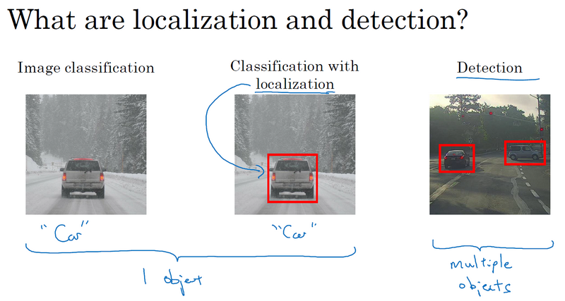
图片分类任务我们已经熟悉了，就是算法遍历图片，判断其中的对象是不是汽车，这就是图片分类。这节课我们要学习构建神经网络的另一个问题，即定位分类问题。这意味着，我们不仅要用算法判断图片中是不是一辆汽车，还要在图片中标记出它的位置，用边框或红色方框把汽车圈起来，这就是定位分类问题。其中“定位”的意思是判断汽车在图片中的具体位置。这周后面几天，我们再讲讲当图片中有多个对象时，应该如何检测它们，并确定出位置。比如，你正在做一个自动驾驶程序，程序不但要检测其它车辆，还要检测其它对象，如行人、摩托车等等，稍后我们再详细讲。
本周我们要研究的分类定位问题，通常只有一个较大的对象位于图片中间位置，我们要对它进行识别和定位。而在对象检测问题中，图片可以含有多个对象，甚至单张图片中会有多个不同分类的对象。因此，图片分类的思路可以帮助学习分类定位，而对象定位的思路又有助于学习对象检测，我们先从分类和定位开始讲起。
图片分类问题你已经并不陌生了，例如，输入一张图片到多层卷积神经网络。这就是卷积神经网络，它会输出一个特征向量，并反馈给softmax单元来预测图片类型。
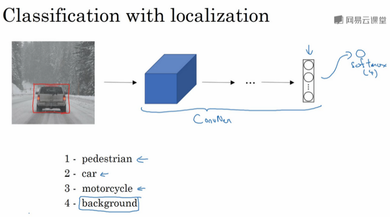
如果你正在构建汽车自动驾驶系统，那么对象可能包括以下几类：行人、汽车、摩托车和背景，这意味着图片中不含有前三种对象，也就是说图片中没有行人、汽车和摩托车，输出结果会是背景对象，这四个分类就是softmax函数可能输出的结果。
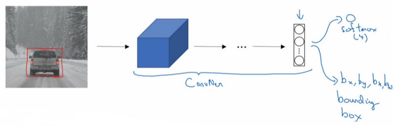
这就是标准的分类过程，如果你还想定位图片中汽车的位置，该怎么做呢？我们可以让神经网络多输出几个单元，输出一个边界框。具体说就是让神经网络再多输出4个数字，标记为,,和，这四个数字是被检测对象的边界框的参数化表示。
我们先来约定本周课程将使用的符号表示，图片左上角的坐标为，右下角标记为。要确定边界框的具体位置，需要指定红色方框的中心点，这个点表示为(,)，边界框的高度为，宽度为。因此训练集不仅包含神经网络要预测的对象分类标签，还要包含表示边界框的这四个数字，接着采用监督学习算法，输出一个分类标签，还有四个参数值，从而给出检测对象的边框位置。此例中，的理想值是0.5，因为它表示汽车位于图片水平方向的中间位置；大约是0.7，表示汽车位于距离图片底部的位置；约为0.3，因为红色方框的高度是图片高度的0.3倍；约为0.4，红色方框的宽度是图片宽度的0.4倍。
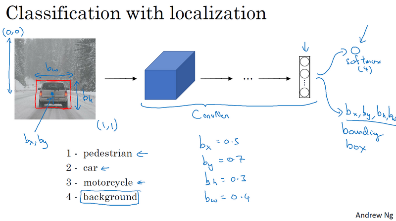
下面我再具体讲讲如何为监督学习任务定义目标标签 。
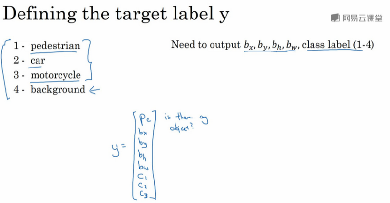
请注意，这有四个分类，神经网络输出的是这四个数字和一个分类标签，或分类标签出现的概率。目标标签的定义如下：
它是一个向量，第一个组件表示是否含有对象，如果对象属于前三类（行人、汽车、摩托车），则，如果是背景，则图片中没有要检测的对象，则。我们可以这样理解，它表示被检测对象属于某一分类的概率，背景分类除外。
如果检测到对象，就输出被检测对象的边界框参数、、和。最后，如果存在某个对象，那么，同时输出、和，表示该对象属于1-3类中的哪一类，是行人，汽车还是摩托车。鉴于我们所要处理的问题，我们假设图片中只含有一个对象，所以针对这个分类定位问题，图片最多只会出现其中一个对象。
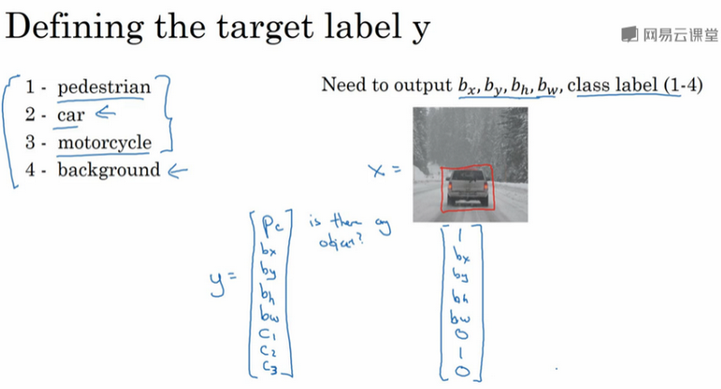
我们再看几个样本，假如这是一张训练集图片，标记为，即上图的汽车图片。而在当中，第一个元素，因为图中有一辆车，、、和会指明边界框的位置，所以标签训练集需要标签的边界框。图片中是一辆车，所以结果属于分类2，因为定位目标不是行人或摩托车，而是汽车，所以，，，、和中最多只有一个等于1。
这是图片中只有一个检测对象的情况，如果图片中没有检测对象呢？如果训练样本是这样一张图片呢？
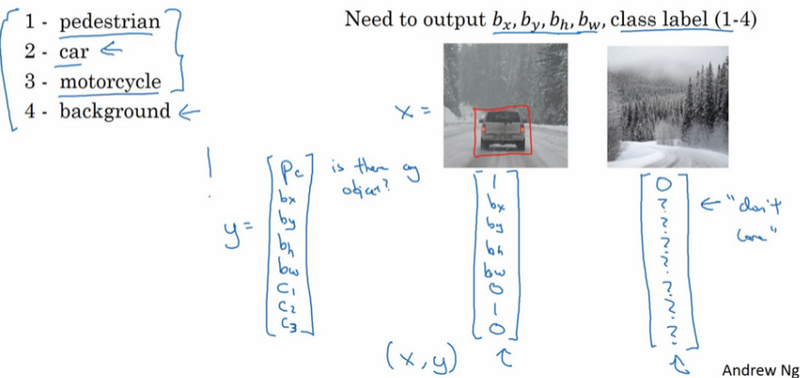
这种情况下，，的其它参数将变得毫无意义，这里我全部写成问号，表示“毫无意义”的参数，因为图片中不存在检测对象，所以不用考虑网络输出中边界框的大小，也不用考虑图片中的对象是属于、和中的哪一类。针对给定的被标记的训练样本，不论图片中是否含有定位对象，构建输入图片和分类标签的具体过程都是如此。这些数据最终定义了训练集。
最后，我们介绍一下神经网络的损失函数，其参数为类别和网络输出，如果采用平方误差策略，则，损失值等于每个元素相应差值的平方和。
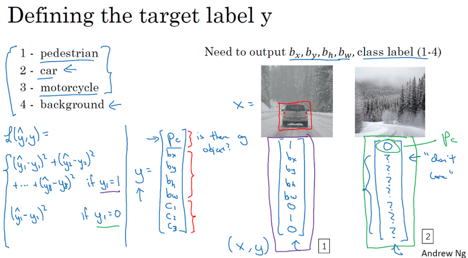
如果图片中存在定位对象，那么，所以，同样地，如果图片中存在定位对象，，损失值就是不同元素的平方和。
另一种情况是，，也就是，损失值是，因为对于这种情况，我们不用考虑其它元素，只需要关注神经网络输出的准确度。
回顾一下，当时，也就是这种情况（编号1），平方误差策略可以减少这8个元素预测值和实际输出结果之间差值的平方。如果， 矩阵中的后7个元素都不用考虑（编号2），只需要考虑神经网络评估（即）的准确度。
为了让大家了解对象定位的细节，这里我用平方误差简化了描述过程。实际应用中，你可以不对、、和softmax激活函数应用对数损失函数，并输出其中一个元素值，通常做法是对边界框坐标应用平方差或类似方法，对应用逻辑回归函数，甚至采用平方预测误差也是可以的。
以上就是利用神经网络解决对象分类和定位问题的详细过程，结果证明，利用神经网络输出批量实数来识别图片中的对象是个非常有用的算法。下节课，我想和大家分享另一种思路，就是把神经网络输出的实数集作为一个回归任务，这个思想也被应用于计算机视觉的其它领域，也是非常有效的，所以下节课见。
3.2 特征点检测（Landmark detection）
上节课，我们讲了如何利用神经网络进行对象定位，即通过输出四个参数值、、和给出图片中对象的边界框。更概括地说，神经网络可以通过输出图片上特征点的坐标来实现对目标特征的识别，我们看几个例子。
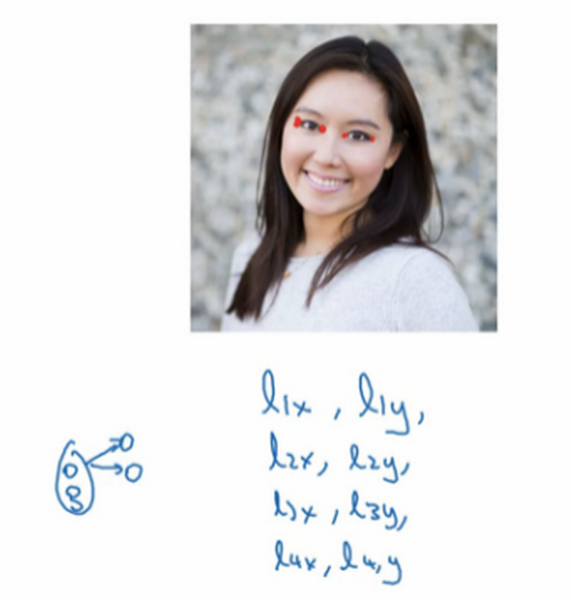
假设你正在构建一个人脸识别应用，出于某种原因，你希望算法可以给出眼角的具体位置。眼角坐标为，你可以让神经网络的最后一层多输出两个数字和，作为眼角的坐标值。如果你想知道两只眼睛的四个眼角的具体位置，那么从左到右，依次用四个特征点来表示这四个眼角。对神经网络稍做些修改，输出第一个特征点（，），第二个特征点（，），依此类推，这四个脸部特征点的位置就可以通过神经网络输出了。
也许除了这四个特征点，你还想得到更多的特征点输出值，这些（图中眼眶上的红色特征点）都是眼睛的特征点，你还可以根据嘴部的关键点输出值来确定嘴的形状，从而判断人物是在微笑还是皱眉，也可以提取鼻子周围的关键特征点。为了便于说明，你可以设定特征点的个数，假设脸部有64个特征点，有些点甚至可以帮助你定义脸部轮廓或下颌轮廓。选定特征点个数，并生成包含这些特征点的标签训练集，然后利用神经网络输出脸部关键特征点的位置。
具体做法是，准备一个卷积网络和一些特征集，将人脸图片输入卷积网络，输出1或0，1表示有人脸，0表示没有人脸，然后输出（，）……直到（，）。这里我用代表一个特征，这里有129个输出单元，其中1表示图片中有人脸，因为有64个特征，64×2=128，所以最终输出128+1=129个单元，由此实现对图片的人脸检测和定位。这只是一个识别脸部表情的基本构造模块，如果你玩过Snapchat或其它娱乐类应用，你应该对AR（增强现实）过滤器多少有些了解，Snapchat过滤器实现了在脸上画皇冠和其他一些特殊效果。检测脸部特征也是计算机图形效果的一个关键构造模块，比如实现脸部扭曲，头戴皇冠等等。当然为了构建这样的网络，你需要准备一个标签训练集，也就是图片和标签的集合，这些点都是人为辛苦标注的。

最后一个例子，如果你对人体姿态检测感兴趣，你还可以定义一些关键特征点，如胸部的中点，左肩，左肘，腰等等。然后通过神经网络标注人物姿态的关键特征点，再输出这些标注过的特征点，就相当于输出了人物的姿态动作。当然，要实现这个功能，你需要设定这些关键特征点，从胸部中心点(，)一直往下，直到(，)。
一旦了解如何用二维坐标系定义人物姿态，操作起来就相当简单了，批量添加输出单元，用以输出要识别的各个特征点的坐标值。要明确一点，特征点1的特性在所有图片中必须保持一致，就好比，特征点1始终是右眼的外眼角，特征点2是右眼的内眼角，特征点3是左眼内眼角，特征点4是左眼外眼角等等。所以标签在所有图片中必须保持一致，假如你雇用他人或自己标记了一个足够大的数据集，那么神经网络便可以输出上述所有特征点，你可以利用它们实现其他有趣的效果，比如判断人物的动作姿态，识别图片中的人物表情等等。
以上就是特征点检测的内容，下节课我们将利用这些构造模块来构建对象检测算法。
3.3 目标检测（Object detection）
学过了对象定位和特征点检测，今天我们来构建一个对象检测算法。这节课，我们将学习如何通过卷积网络进行对象检测，采用的是基于滑动窗口的目标检测算法。
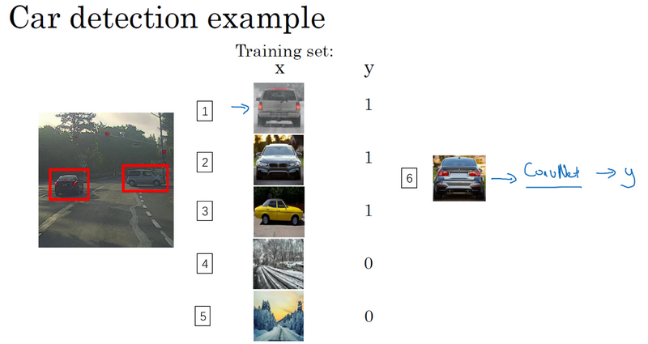
假如你想构建一个汽车检测算法，步骤是，首先创建一个标签训练集，也就是和表示适当剪切的汽车图片样本，这张图片（编号1）是一个正样本，因为它是一辆汽车图片，这几张图片（编号2、3）也有汽车，但这两张（编号4、5）没有汽车。出于我们对这个训练集的期望，你一开始可以使用适当剪切的图片，就是整张图片几乎都被汽车占据，你可以照张照片，然后剪切，剪掉汽车以外的部分，使汽车居于中间位置，并基本占据整张图片。有了这个标签训练集，你就可以开始训练卷积网络了，输入这些适当剪切过的图片（编号6），卷积网络输出，0或1表示图片中有汽车或没有汽车。训练完这个卷积网络，就可以用它来实现滑动窗口目标检测，具体步骤如下。
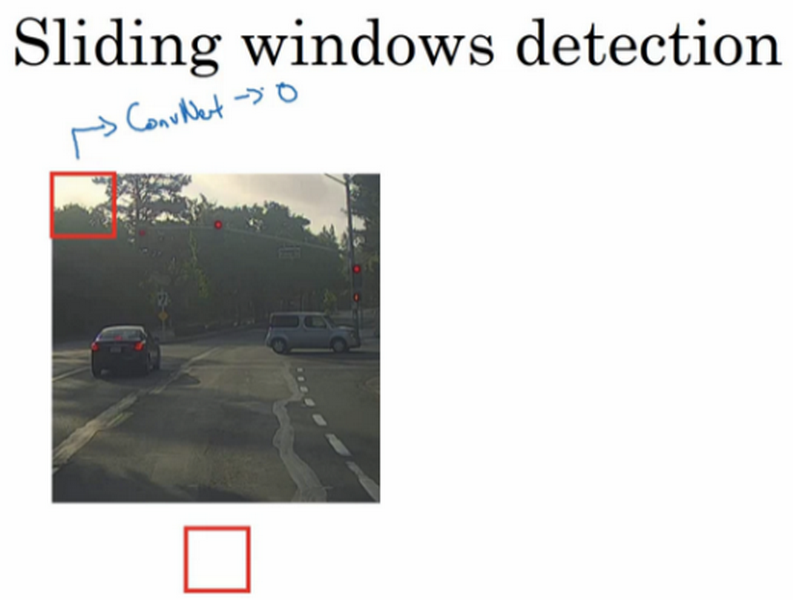
假设这是一张测试图片，首先选定一个特定大小的窗口，比如图片下方这个窗口，将这个红色小方块输入卷积神经网络，卷积网络开始进行预测，即判断红色方框内有没有汽车。
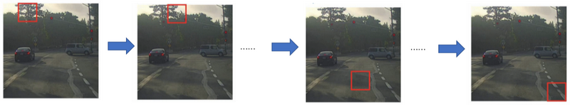
滑动窗口目标检测算法接下来会继续处理第二个图像，即红色方框稍向右滑动之后的区域，并输入给卷积网络，因此输入给卷积网络的只有红色方框内的区域，再次运行卷积网络，然后处理第三个图像，依次重复操作，直到这个窗口滑过图像的每一个角落。
为了滑动得更快，我这里选用的步幅比较大，思路是以固定步幅移动窗口，遍历图像的每个区域，把这些剪切后的小图像输入卷积网络，对每个位置按0或1进行分类，这就是所谓的图像滑动窗口操作。
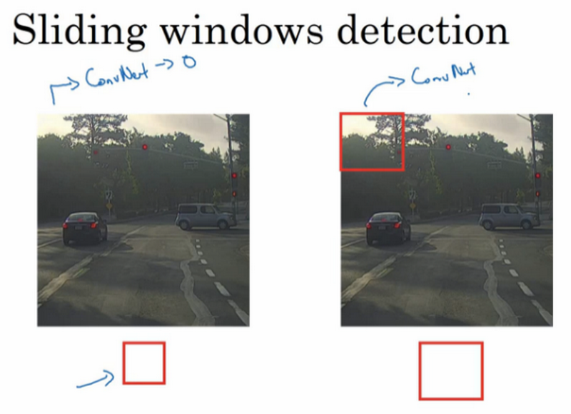
重复上述操作，不过这次我们选择一个更大的窗口，截取更大的区域，并输入给卷积神经网络处理，你可以根据卷积网络对输入大小调整这个区域，然后输入给卷积网络，输出0或1。
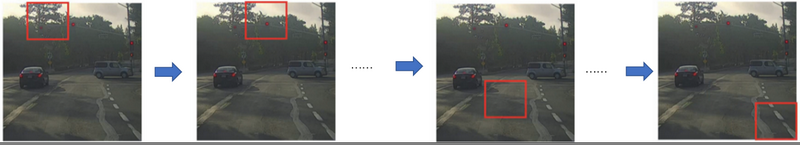
再以某个固定步幅滑动窗口，重复以上操作，遍历整个图像，输出结果。
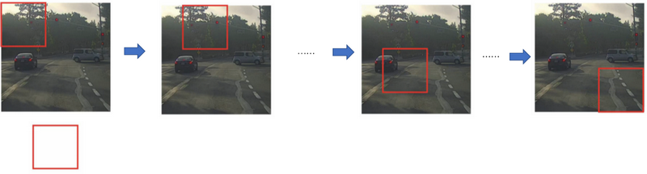
然后第三次重复操作，这次选用更大的窗口。
如果你这样做，不论汽车在图片的什么位置，总有一个窗口可以检测到它。
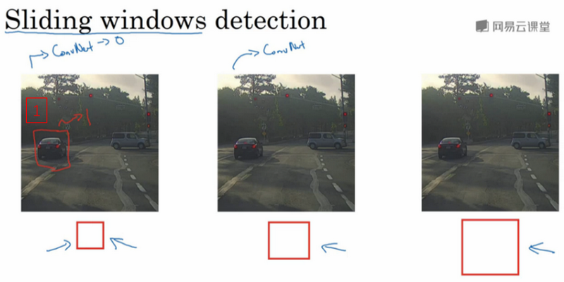
比如，将这个窗口（编号1）输入卷积网络，希望卷积网络对该输入区域的输出结果为1，说明网络检测到图上有辆车。
这种算法叫作滑动窗口目标检测，因为我们以某个步幅滑动这些方框窗口遍历整张图片，对这些方形区域进行分类，判断里面有没有汽车。
滑动窗口目标检测算法也有很明显的缺点，就是计算成本，因为你在图片中剪切出太多小方块，卷积网络要一个个地处理。如果你选用的步幅很大，显然会减少输入卷积网络的窗口个数，但是粗糙间隔尺寸可能会影响性能。反之，如果采用小粒度或小步幅，传递给卷积网络的小窗口会特别多，这意味着超高的计算成本。
所以在神经网络兴起之前，人们通常采用更简单的分类器进行对象检测，比如通过采用手工处理工程特征的简单的线性分类器来执行对象检测。至于误差，因为每个分类器的计算成本都很低，它只是一个线性函数，所以滑动窗口目标检测算法表现良好，是个不错的算法。然而，卷积网络运行单个分类人物的成本却高得多，像这样滑动窗口太慢。除非采用超细粒度或极小步幅，否则无法准确定位图片中的对象。
不过，庆幸的是，计算成本问题已经有了很好的解决方案，大大提高了卷积层上应用滑动窗口目标检测器的效率，关于它的具体实现，我们下节课再讲。
3.4 滑动窗口的卷积实现（Convolutional implementation of sliding windows）
上节课，我们学习了如何通过卷积网络实现滑动窗口对象检测算法，但效率很低。这节课我们讲讲如何在卷积层上应用这个算法。
为了构建滑动窗口的卷积应用，首先要知道如何把神经网络的全连接层转化成卷积层。我们先讲解这部分内容，下一张幻灯片，我们将按照这个思路来演示卷积的应用过程。
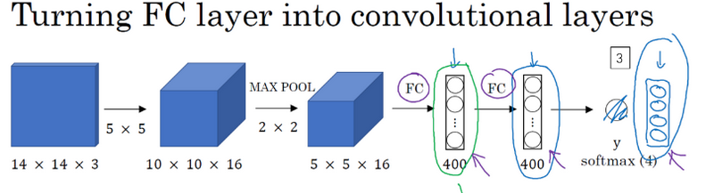
假设对象检测算法输入一个14×14×3的图像，图像很小，不过演示起来方便。在这里过滤器大小为5×5，数量是16，14×14×3的图像在过滤器处理之后映射为10×10×16。然后通过参数为2×2的最大池化操作，图像减小到5×5×16。然后添加一个连接400个单元的全连接层，接着再添加一个全连接层，最后通过softmax单元输出。为了跟下图区分开，我先做一点改动，用4个数字来表示，它们分别对应softmax单元所输出的4个分类出现的概率。这4个分类可以是行人、汽车、摩托车和背景或其它对象。
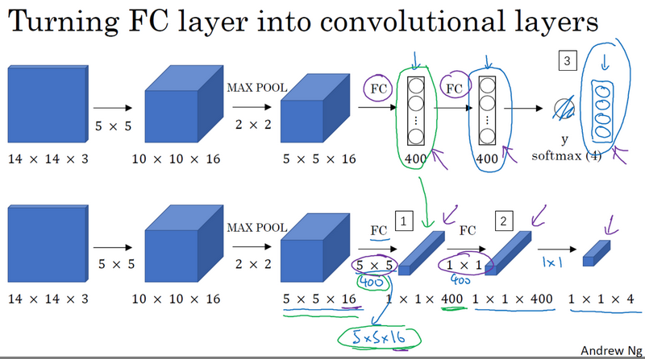
现在我要演示的就是如何把这些全连接层转化为卷积层，画一个这样的卷积网络，它的前几层和之前的一样，而对于下一层，也就是这个全连接层，我们可以用5×5的过滤器来实现，数量是400个（编号1所示），输入图像大小为5×5×16，用5×5的过滤器对它进行卷积操作，过滤器实际上是5×5×16，因为在卷积过程中，过滤器会遍历这16个通道，所以这两处的通道数量必须保持一致，输出结果为1×1。假设应用400个这样的5×5×16过滤器，输出维度就是1×1×400，我们不再把它看作一个含有400个节点的集合，而是一个1×1×400的输出层。从数学角度看，它和全连接层是一样的，因为这400个节点中每个节点都有一个5×5×16维度的过滤器，所以每个值都是上一层这些5×5×16激活值经过某个任意线性函数的输出结果。
我们再添加另外一个卷积层（编号2所示），这里用的是1×1卷积，假设有400个1×1的过滤器，在这400个过滤器的作用下，下一层的维度是1×1×400，它其实就是上个网络中的这一全连接层。最后经由1×1过滤器的处理，得到一个softmax激活值，通过卷积网络，我们最终得到这个1×1×4的输出层，而不是这4个数字（编号3所示）。
以上就是用卷积层代替全连接层的过程，结果这几个单元集变成了1×1×400和1×1×4的维度。
参考论文：Sermanet, Pierre, et al. "OverFeat: Integrated Recognition, Localization and Detection using Convolutional Networks." Eprint Arxiv (2013).
掌握了卷积知识，我们再看看如何通过卷积实现滑动窗口对象检测算法。讲义中的内容借鉴了屏幕下方这篇关于OverFeat的论文，它的作者包括Pierre Sermanet，David Eigen，张翔，Michael Mathieu，Rob Fergus，Yann LeCun。
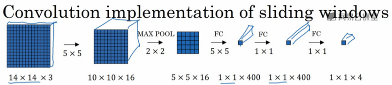
假设向滑动窗口卷积网络输入14×14×3的图片，为了简化演示和计算过程，这里我们依然用14×14的小图片。和前面一样，神经网络最后的输出层，即softmax单元的输出是1×1×4，我画得比较简单，严格来说，14×14×3应该是一个长方体，第二个10×10×16也是一个长方体，但为了方便，我只画了正面。所以，对于1×1×400的这个输出层，我也只画了它1×1的那一面，所以这里显示的都是平面图，而不是3D图像。
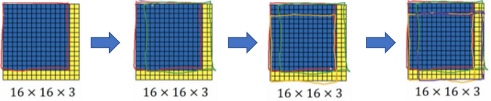
假设输入给卷积网络的图片大小是14×14×3，测试集图片是16×16×3，现在给这个输入图片加上黄色条块，在最初的滑动窗口算法中，你会把这片蓝色区域输入卷积网络（红色笔标记）生成0或1分类。接着滑动窗口，步幅为2个像素，向右滑动2个像素，将这个绿框区域输入给卷积网络，运行整个卷积网络，得到另外一个标签0或1。继续将这个橘色区域输入给卷积网络，卷积后得到另一个标签，最后对右下方的紫色区域进行最后一次卷积操作。我们在这个16×16×3的小图像上滑动窗口，卷积网络运行了4次，于是输出了了4个标签。
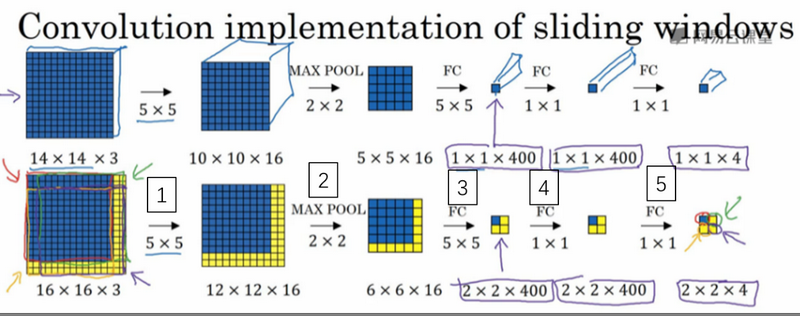
结果发现，这4次卷积操作中很多计算都是重复的。所以执行滑动窗口的卷积时使得卷积网络在这4次前向传播过程中共享很多计算，尤其是在这一步操作中（编号1），卷积网络运行同样的参数，使得相同的5×5×16过滤器进行卷积操作，得到12×12×16的输出层。然后执行同样的最大池化（编号2），输出结果6×6×16。照旧应用400个5×5的过滤器（编号3），得到一个2×2×400的输出层，现在输出层为2×2×400，而不是1×1×400。应用1×1过滤器（编号4）得到另一个2×2×400的输出层。再做一次全连接的操作（编号5），最终得到2×2×4的输出层，而不是1×1×4。最终，在输出层这4个子方块中，蓝色的是图像左上部分14×14的输出（红色箭头标识），右上角方块是图像右上部分（绿色箭头标识）的对应输出，左下角方块是输入层左下角（橘色箭头标识），也就是这个14×14区域经过卷积网络处理后的结果，同样，右下角这个方块是卷积网络处理输入层右下角14×14区域(紫色箭头标识)的结果。
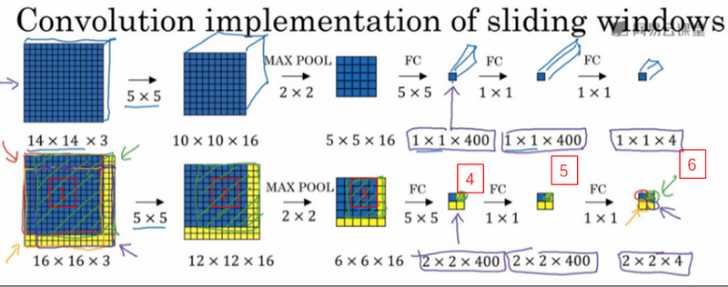
如果你想了解具体的计算步骤，以绿色方块为例，假设你剪切出这块区域（编号1），传递给卷积网络，第一层的激活值就是这块区域（编号2），最大池化后的下一层的激活值是这块区域（编号3），这块区域对应着后面几层输出的右上角方块（编号4，5，6）。
所以该卷积操作的原理是我们不需要把输入图像分割成四个子集，分别执行前向传播，而是把它们作为一张图片输入给卷积网络进行计算，其中的公共区域可以共享很多计算，就像这里我们看到的这个4个14×14的方块一样。
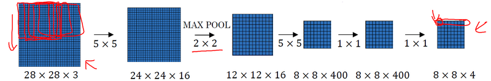
下面我们再看一个更大的图片样本，假如对一个28×28×3的图片应用滑动窗口操作，如果以同样的方式运行前向传播，最后得到8×8×4的结果。跟上一个范例一样，以14×14区域滑动窗口，首先在这个区域应用滑动窗口，其结果对应输出层的左上角部分。接着以大小为2的步幅不断地向右移动窗口，直到第8个单元格，得到输出层的第一行。然后向图片下方移动，最终输出这个8×8×4的结果。因为最大池化参数为2，相当于以大小为2的步幅在原始图片上应用神经网络。
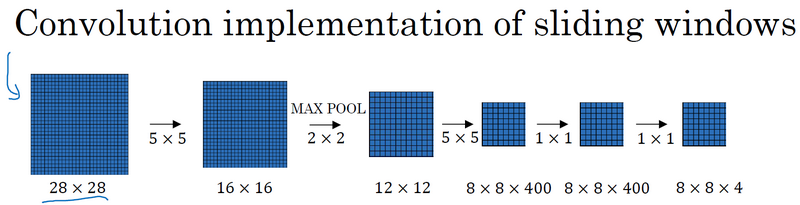
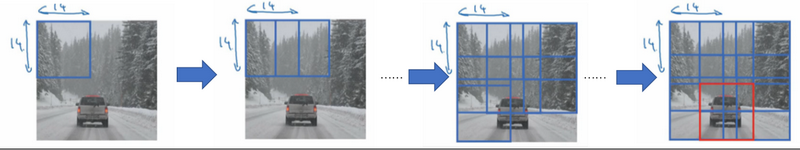
总结一下滑动窗口的实现过程，在图片上剪切出一块区域，假设它的大小是14×14，把它输入到卷积网络。继续输入下一块区域，大小同样是14×14，重复操作，直到某个区域识别到汽车。
但是正如在前一页所看到的，我们不能依靠连续的卷积操作来识别图片中的汽车，比如，我们可以对大小为28×28的整张图片进行卷积操作，一次得到所有预测值，如果足够幸运，神经网络便可以识别出汽车的位置。
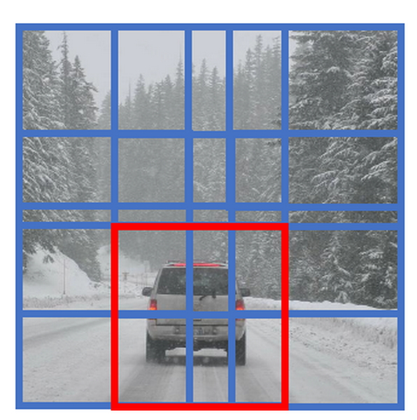
以上就是在卷积层上应用滑动窗口算法的内容，它提高了整个算法的效率。不过这种算法仍然存在一个缺点，就是边界框的位置可能不够准确。下节课，我们将学习如何解决这个问题。
3.5 Bounding Box预测（Bounding box predictions）
在上一个视频中，你们学到了滑动窗口法的卷积实现，这个算法效率更高，但仍然存在问题，不能输出最精准的边界框。在这个视频中，我们看看如何得到更精准的边界框。
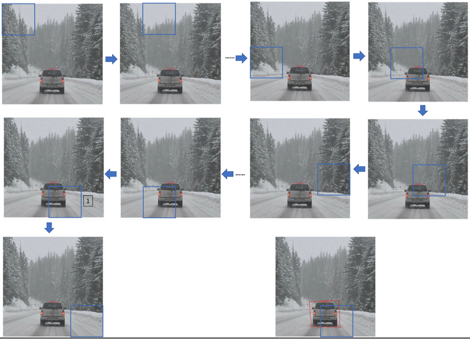
在滑动窗口法中，你取这些离散的位置集合，然后在它们上运行分类器，在这种情况下，这些边界框没有一个能完美匹配汽车位置，也许这个框（编号1）是最匹配的了。还有看起来这个真实值，最完美的边界框甚至不是方形，稍微有点长方形（红色方框所示），长宽比有点向水平方向延伸，有没有办法让这个算法输出更精准的边界框呢？
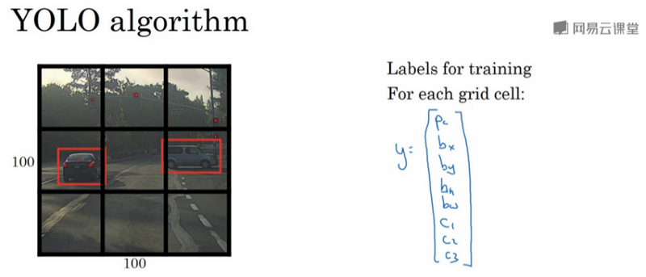
其中一个能得到更精准边界框的算法是YOLO算法，YOLO(You only look once)意思是你只看一次，这是由Joseph Redmon，Santosh Divvala，Ross Girshick和Ali Farhadi提出的算法。
是这么做的，比如你的输入图像是100×100的，然后在图像上放一个网格。为了介绍起来简单一些，我用3×3网格，实际实现时会用更精细的网格，可能是19×19。基本思路是使用图像分类和定位算法，前几个视频介绍过的，然后将算法应用到9个格子上。（基本思路是，采用图像分类和定位算法，本周第一个视频中介绍过的，逐一应用在图像的9个格子中。）更具体一点，你需要这样定义训练标签，所以对于9个格子中的每一个指定一个标签，是8维的，和你之前看到的一样，，等于0或1取决于这个绿色格子中是否有图像。然后、、和作用就是，如果那个格子里有对象，那么就给出边界框坐标。然后、和就是你想要识别的三个类别，背景类别不算，所以你尝试在背景类别中识别行人、汽车和摩托车，那么、和可以是行人、汽车和摩托车类别。这张图里有9个格子，所以对于每个格子都有这么一个向量。
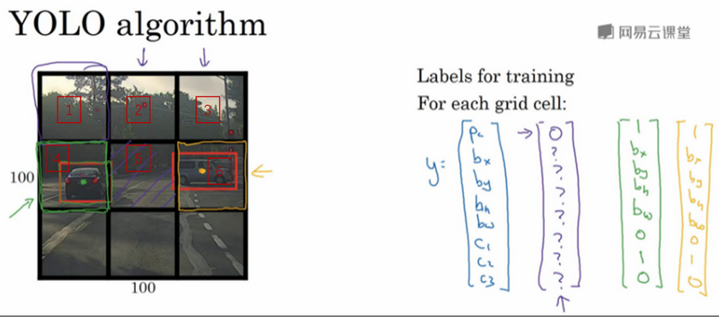
我们看看左上方格子，这里这个（编号1），里面什么也没有，所以左上格子的标签向量是。然后这个格子（编号2）的输出标签也是一样，这个格子（编号3），还有其他什么也没有的格子都一样。
现在这个格子呢？讲的更具体一点，这张图有两个对象，YOLO算法做的就是，取两个对象的中点，然后将这个对象分配给包含对象中点的格子。所以左边的汽车就分配到这个格子上（编号4），然后这辆Condor（车型：神鹰）中点在这里，分配给这个格子（编号6）。所以即使中心格子（编号5）同时有两辆车的一部分，我们就假装中心格子没有任何我们感兴趣的对象，所以对于中心格子，分类标签和这个向量类似，和这个没有对象的向量类似，即。而对于这个格子，这个用绿色框起来的格子（编号4），目标标签就是这样的，这里有一个对象，，然后你写出、、和来指定边界框位置，然后还有类别1是行人，那么，类别2是汽车，所以，类别3是摩托车，则数值，即。右边这个格子（编号6）也是类似的，因为这里确实有一个对象，它的向量应该是这个样子的，作为目标向量对应右边的格子。
所以对于这里9个格子中任何一个，你都会得到一个8维输出向量，因为这里是3×3的网格，所以有9个格子，总的输出尺寸是3×3×8，所以目标输出是3×3×8。因为这里有3×3格子，然后对于每个格子，你都有一个8维向量，所以目标输出尺寸是3×3×8。
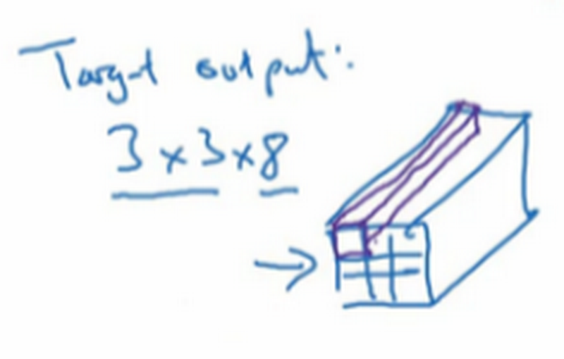
对于这个例子中，左上格子是1×1×8，对应的是9个格子中左上格子的输出向量。所以对于这3×3中每一个位置而言，对于这9个格子，每个都对应一个8维输出目标向量，其中一些值可以是dont care-s（即？），如果这里没有对象的话。所以总的目标输出，这个图片的输出标签尺寸就是3×3×8。

如果你现在要训练一个输入为100×100×3的神经网络，现在这是输入图像，然后你有一个普通的卷积网络，卷积层，最大池化层等等，最后你会有这个，选择卷积层和最大池化层，这样最后就映射到一个3×3×8输出尺寸。所以你要做的是，有一个输入，就是这样的输入图像，然后你有这些3×3×8的目标标签。当你用反向传播训练神经网络时，将任意输入映射到这类输出向量。
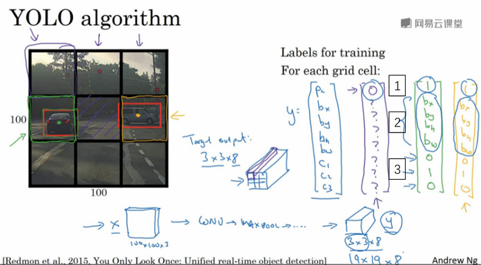
所以这个算法的优点在于神经网络可以输出精确的边界框，所以测试的时候，你做的是喂入输入图像，然后跑正向传播，直到你得到这个输出。然后对于这里3×3位置对应的9个输出，我们在输出中展示过的，你就可以读出1或0（编号1位置），你就知道9个位置之一有个对象。如果那里有个对象，那个对象是什么（编号3位置），还有格子中这个对象的边界框是什么（编号2位置）。只要每个格子中对象数目没有超过1个，这个算法应该是没问题的。一个格子中存在多个对象的问题，我们稍后再讨论。但实践中，我们这里用的是比较小的3×3网格，实践中你可能会使用更精细的19×19网格，所以输出就是19×19×8。这样的网格精细得多，那么多个对象分配到同一个格子得概率就小得多。
重申一下，把对象分配到一个格子的过程是，你观察对象的中点，然后将这个对象分配到其中点所在的格子，所以即使对象可以横跨多个格子，也只会被分配到9个格子其中之一，就是3×3网络的其中一个格子，或者19×19网络的其中一个格子。在19×19网格中，两个对象的中点（图中蓝色点所示）处于同一个格子的概率就会更低。
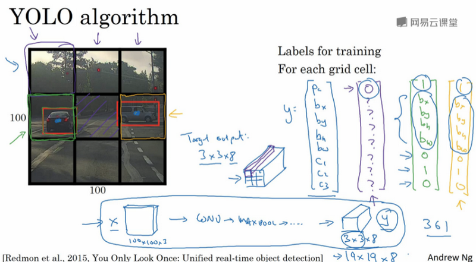
所以要注意，首先这和图像分类和定位算法非常像，我们在本周第一节课讲过的，就是它显式地输出边界框坐标，所以这能让神经网络输出边界框，可以具有任意宽高比，并且能输出更精确的坐标，不会受到滑动窗口分类器的步长大小限制。其次，这是一个卷积实现，你并没有在3×3网格上跑9次算法，或者，如果你用的是19×19的网格，19平方是361次，所以你不需要让同一个算法跑361次。相反，这是单次卷积实现，但你使用了一个卷积网络，有很多共享计算步骤，在处理这3×3计算中很多计算步骤是共享的，或者你的19×19的网格，所以这个算法效率很高。
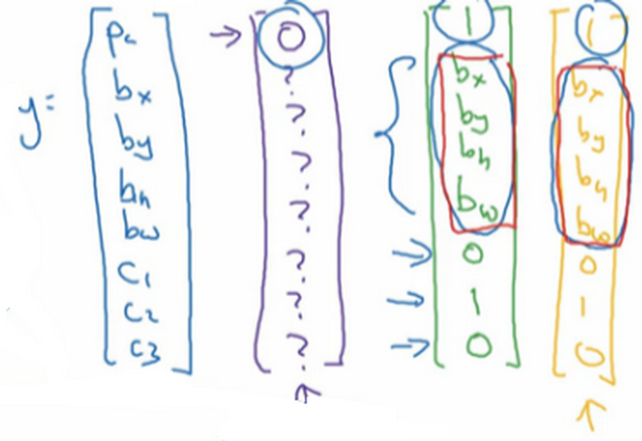
事实上YOLO算法有一个好处，也是它受欢迎的原因，因为这是一个卷积实现，实际上它的运行速度非常快，可以达到实时识别。在结束之前我还想给你们分享一个小细节，如何编码这些边界框、、和，我们在下一张幻灯片上讨论。
这里有两辆车，我们有个3×3网格，我们以右边的车为例（编号1），红色格子里有个对象，所以目标标签就是，，然后、、和，然后，，，即。你怎么指定这个边界框呢？
Specify the bounding boxes：
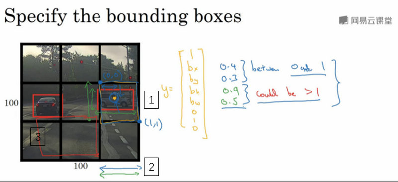
在YOLO算法中，对于这个方框（编号1所示），我们约定左上这个点是，然后右下这个点是,要指定橙色中点的位置，大概是0.4，因为它的位置大概是水平长度的0.4，然后大概是0.3，然后边界框的高度用格子总体宽度的比例表示，所以这个红框的宽度可能是蓝线（编号2所示的蓝线）的90%，所以是0.9，它的高度也许是格子总体高度的一半，这样的话就是0.5。换句话说，、、和单位是相对于格子尺寸的比例，所以和必须在0和1之间，因为从定义上看，橙色点位于对象分配到格子的范围内，如果它不在0和1之间，如果它在方块外，那么这个对象就应该分配到另一个格子上。这个值（和）可能会大于1，特别是如果有一辆汽车的边界框是这样的（编号3所示），那么边界框的宽度和高度有可能大于1。
指定边界框的方式有很多，但这种约定是比较合理的，如果你去读YOLO的研究论文，YOLO的研究工作有其他参数化的方式，可能效果会更好，我这里就只给出了一个合理的约定，用起来应该没问题。不过还有其他更复杂的参数化方式，涉及到sigmoid函数，确保这个值（和）介于0和1之间，然后使用指数参数化来确保这些（和）都是非负数，因为0.9和0.5，这个必须大于等于0。还有其他更高级的参数化方式，可能效果要更好一点，但我这里讲的办法应该是管用的。
这就是YOLO算法，你只看一次算法，在接下来的几个视频中，我会告诉你一些其他的思路可以让这个算法做的更好。在此期间，如果你感兴趣，也可以看看YOLO的论文，在前几张幻灯片底部引用的YOLO论文。
Redmon, Joseph, et al. "You Only Look Once: Unified, Real-Time Object Detection." (2015):779-788.
不过看这些论文之前，先给你们提个醒，YOLO论文是相对难度较高的论文之一，我记得我第一次读这篇论文的时候，我真的很难搞清楚到底是怎么实现的，我最后问了一些我认识的研究员，看看他们能不能给我讲清楚，即使是他们，也很难理解这篇论文的一些细节。所以如果你看论文的时候，发现看不懂，这是没问题的，我希望这种场合出现的概率要更低才好，但实际上，即使是资深研究员也有读不懂研究论文的时候，必须去读源代码，或者联系作者之类的才能弄清楚这些算法的细节。但你们不要被我吓到，你们可以自己看看这些论文，如果你们感兴趣的话，但这篇论文相对较难。现在你们了解了YOLO算法的基础，我们继续讨论别的让这个算法效果更好的研究。
3.6 交并比（Intersection over union）
你如何判断对象检测算法运作良好呢？在本视频中，你将了解到并交比函数，可以用来评价对象检测算法。在下一个视频中，我们用它来插入一个分量来进一步改善检测算法，我们开始吧。
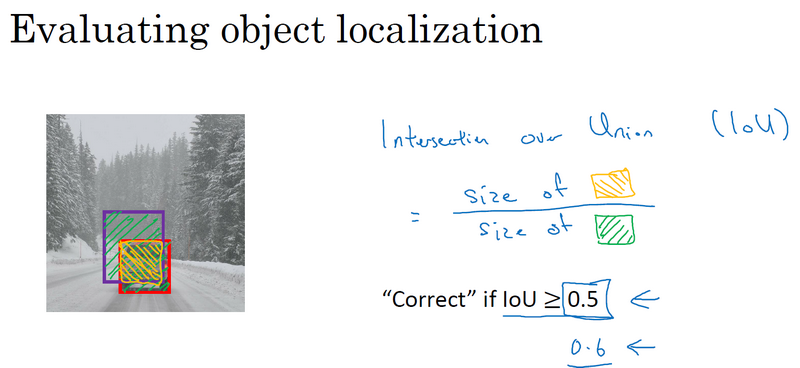
在对象检测任务中，你希望能够同时定位对象，所以如果实际边界框是这样的，你的算法给出这个紫色的边界框，那么这个结果是好还是坏？所以交并比（loU）函数做的是计算两个边界框交集和并集之比。两个边界框的并集是这个区域，就是属于包含两个边界框区域（绿色阴影表示区域），而交集就是这个比较小的区域（橙色阴影表示区域），那么交并比就是交集的大小，这个橙色阴影面积，然后除以绿色阴影的并集面积。
一般约定，在计算机检测任务中，如果，就说检测正确，如果预测器和实际边界框完美重叠，loU就是1，因为交集就等于并集。但一般来说只要，那么结果是可以接受的，看起来还可以。一般约定，0.5是阈值，用来判断预测的边界框是否正确。一般是这么约定，但如果你希望更严格一点，你可以将loU定得更高，比如说大于0.6或者更大的数字，但loU越高，边界框越精确。
所以这是衡量定位精确度的一种方式，你只需要统计算法正确检测和定位对象的次数，你就可以用这样的定义判断对象定位是否准确。再次，0.5是人为约定，没有特别深的理论依据，如果你想更严格一点，可以把阈值定为0.6。有时我看到更严格的标准，比如0.6甚至0.7，但很少见到有人将阈值降到0.5以下。
人们定义loU这个概念是为了评价你的对象定位算法是否精准，但更一般地说，loU衡量了两个边界框重叠地相对大小。如果你有两个边界框，你可以计算交集，计算并集，然后求两个数值的比值，所以这也可以判断两个边界框是否相似，我们将在下一个视频中再次用到这个函数，当我们讨论非最大值抑制时再次用到。
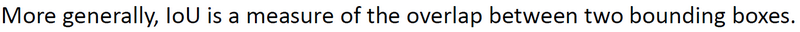
好，这就是loU，或者说交并比，不要和借据中提到的我欠你钱的这个概念所混淆，如果你借钱给别人，他们会写给你一个借据，说：“我欠你这么多钱（I own you this much money）。”，这也叫做loU。这是完全不同的概念，这两个概念重名。
现在介绍了loU交并比的定义之后，在下一个视频中，我想讨论非最大值抑制，这个工具可以让YOLO算法输出效果更好，我们下一个视频继续。
3.7 非极大值抑制（Non-max suppression）
到目前为止你们学到的对象检测中的一个问题是，你的算法可能对同一个对象做出多次检测，所以算法不是对某个对象检测出一次，而是检测出多次。非极大值抑制这个方法可以确保你的算法对每个对象只检测一次，我们讲一个例子。
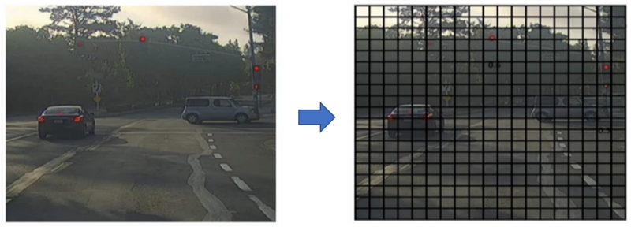
假设你需要在这张图片里检测行人和汽车，你可能会在上面放个19×19网格，理论上这辆车只有一个中点，所以它应该只被分配到一个格子里，左边的车子也只有一个中点，所以理论上应该只有一个格子做出有车的预测。
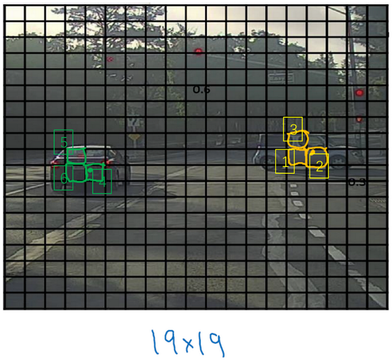
实践中当你运行对象分类和定位算法时，对于每个格子都运行一次，所以这个格子（编号1）可能会认为这辆车中点应该在格子内部，这几个格子（编号2、3）也会这么认为。对于左边的车子也一样，所以不仅仅是这个格子，如果这是你们以前见过的图像，不仅这个格（编号4）子会认为它里面有车，也许这个格子（编号5）和这个格子（编号6）也会，也许其他格子也会这么认为，觉得它们格子内有车。
我们分步介绍一下非极大抑制是怎么起效的，因为你要在361个格子上都运行一次图像检测和定位算法，那么可能很多格子都会举手说我的，我这个格子里有车的概率很高，而不是361个格子中仅有两个格子会报告它们检测出一个对象。所以当你运行算法的时候，最后可能会对同一个对象做出多次检测，所以非极大值抑制做的就是清理这些检测结果。这样一辆车只检测一次，而不是每辆车都触发多次检测。
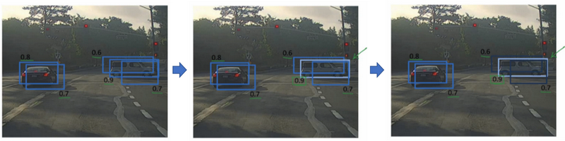
所以具体上，这个算法做的是，首先看看每次报告每个检测结果相关的概率，在本周的编程练习中有更多细节，实际上是乘以、或。现在我们就说，这个检测概率，首先看概率最大的那个，这个例子（右边车辆）中是0.9，然后就说这是最可靠的检测，所以我们就用高亮标记，就说我这里找到了一辆车。这么做之后，非极大值抑制就会逐一审视剩下的矩形，所有和这个最大的边框有很高交并比，高度重叠的其他边界框，那么这些输出就会被抑制。所以这两个矩形分别是0.6和0.7，这两个矩形和淡蓝色矩形重叠程度很高，所以会被抑制，变暗，表示它们被抑制了。
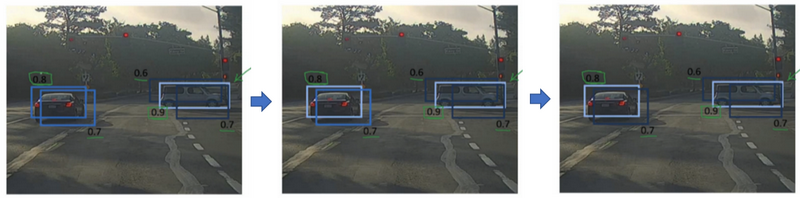
接下来，逐一审视剩下的矩形，找出概率最高，最高的一个，在这种情况下是0.8，我们就认为这里检测出一辆车（左边车辆），然后非极大值抑制算法就会去掉其他loU值很高的矩形。所以现在每个矩形都会被高亮显示或者变暗，如果你直接抛弃变暗的矩形，那就剩下高亮显示的那些，这就是最后得到的两个预测结果。
所以这就是非极大值抑制，非最大值意味着你只输出概率最大的分类结果，但抑制很接近，但不是最大的其他预测结果，所以这方法叫做非极大值抑制。
我们来看看算法的细节，首先这个19×19网格上执行一下算法，你会得到19×19×8的输出尺寸。不过对于这个例子来说，我们简化一下，就说你只做汽车检测，我们就去掉、和，然后假设这条线对于19×19的每一个输出，对于361个格子的每个输出，你会得到这样的输出预测，就是格子中有对象的概率（），然后是边界框参数（、、和）。如果你只检测一种对象，那么就没有、和这些预测分量。多个对象处于同一个格子中的情况，我会放到编程练习中，你们可以在本周末之前做做。
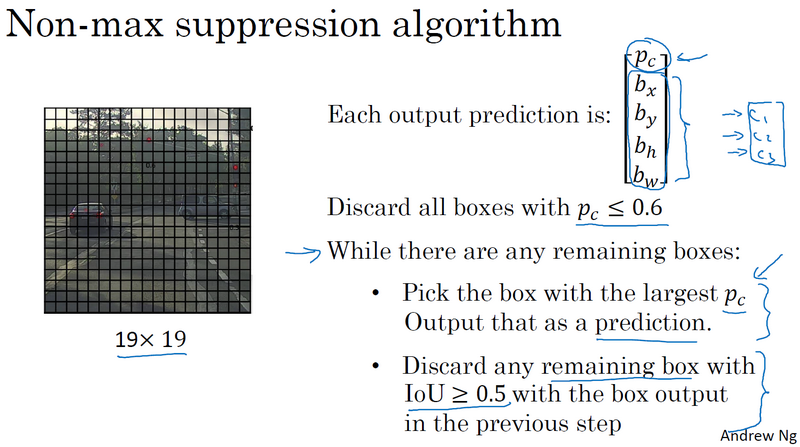
现在要实现非极大值抑制，你可以做的第一件事是，去掉所有边界框，我们就将所有的预测值，所有的边界框小于或等于某个阈值，比如的边界框去掉。
我们就这样说，除非算法认为这里存在对象的概率至少有0.6，否则就抛弃，所以这就抛弃了所有概率比较低的输出边界框。所以思路是对于这361个位置，你输出一个边界框，还有那个最好边界框所对应的概率，所以我们只是抛弃所有低概率的边界框。
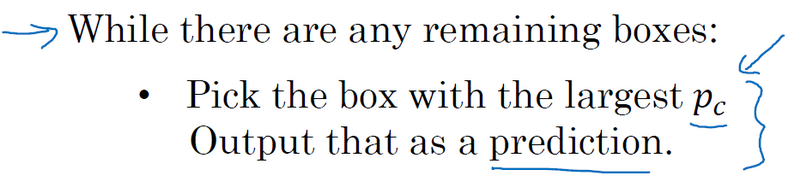
接下来剩下的边界框，没有抛弃没有处理过的，你就一直选择概率最高的边界框，然后把它输出成预测结果，这个过程就是上一张幻灯片，取一个边界框，让它高亮显示，这样你就可以确定输出做出有一辆车的预测。
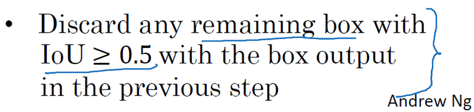
接下来去掉所有剩下的边界框，任何没有达到输出标准的边界框，之前没有抛弃的边界框，把这些和输出边界框有高重叠面积和上一步输出边界框有很高交并比的边界框全部抛弃。所以while循环的第二步是上一张幻灯片变暗的那些边界框，和高亮标记的边界重叠面积很高的那些边界框抛弃掉。在还有剩下边界框的时候，一直这么做，把没处理的都处理完，直到每个边界框都判断过了，它们有的作为输出结果，剩下的会被抛弃，它们和输出结果重叠面积太高，和输出结果交并比太高，和你刚刚输出这里存在对象结果的重叠程度过高。
在这张幻灯片中，我只介绍了算法检测单个对象的情况，如果你尝试同时检测三个对象，比如说行人、汽车、摩托，那么输出向量就会有三个额外的分量。事实证明，正确的做法是独立进行三次非极大值抑制，对每个输出类别都做一次，但这个细节就留给本周的编程练习吧，其中你可以自己尝试实现，我们可以自己试试在多个对象类别检测时做非极大值抑制。
这就是非极大值抑制，如果你能实现我们说过的对象检测算法，你其实可以得到相当不错的结果。但结束我们对YOLO算法的介绍之前，最后我还有一个细节想给大家分享，可以进一步改善算法效果，就是anchor box的思路，我们下一个视频再介绍。
3.8 Anchor Boxes
到目前为止，对象检测中存在的一个问题是每个格子只能检测出一个对象，如果你想让一个格子检测出多个对象，你可以这么做，就是使用anchor box这个概念，我们从一个例子开始讲吧。
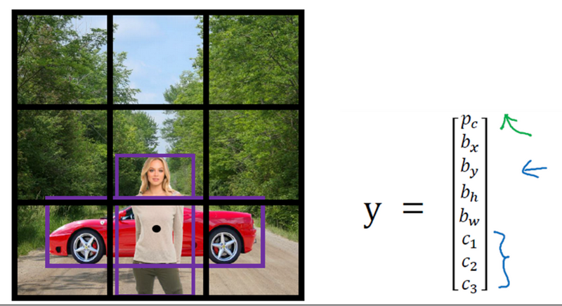
假设你有这样一张图片，对于这个例子，我们继续使用3×3网格，注意行人的中点和汽车的中点几乎在同一个地方，两者都落入到同一个格子中。所以对于那个格子，如果 输出这个向量，你可以检测这三个类别，行人、汽车和摩托车，它将无法输出检测结果，所以我必须从两个检测结果中选一个。
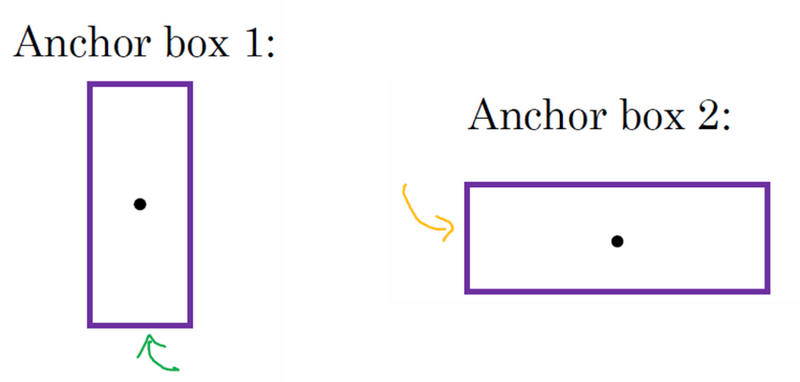
而anchor box的思路是，这样子，预先定义两个不同形状的anchor box，或者anchor box形状，你要做的是把预测结果和这两个anchor box关联起来。一般来说，你可能会用更多的anchor box，可能要5个甚至更多，但对于这个视频，我们就用两个anchor box，这样介绍起来简单一些。

你要做的是定义类别标签，用的向量不再是上面这个，而是重复两次，，前面的（绿色方框标记的参数）是和anchor box 1关联的8个参数，后面的8个参数（橙色方框标记的元素）是和anchor box 2相关联。因为行人的形状更类似于anchor box 1的形状，而不是anchor box 2的形状，所以你可以用这8个数值（前8个参数），这么编码，是的，代表有个行人，用和来编码包住行人的边界框，然后用()来说明这个对象是个行人。
然后是车子，因为车子的边界框比起anchor box 1更像anchor box 2的形状，你就可以这么编码，这里第二个对象是汽车，然后有这样的边界框等等，这里所有参数都和检测汽车相关()。
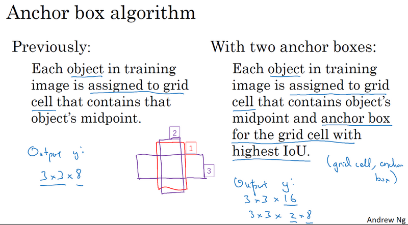
总结一下，用anchor box之前，你做的是这个，对于训练集图像中的每个对象，都根据那个对象中点位置分配到对应的格子中，所以输出就是3×3×8，因为是3×3网格，对于每个网格位置，我们有输出向量，包含，然后边界框参数和，然后。
现在用到anchor box这个概念，是这么做的。现在每个对象都和之前一样分配到同一个格子中，分配到对象中点所在的格子中，以及分配到和对象形状交并比最高的anchor box中。所以这里有两个anchor box，你就取这个对象，如果你的对象形状是这样的（编号1，红色框），你就看看这两个anchor box，anchor box 1形状是这样（编号2，紫色框），anchor box 2形状是这样（编号3，紫色框），然后你观察哪一个anchor box和实际边界框（编号1，红色框）的交并比更高，不管选的是哪一个，这个对象不只分配到一个格子，而是分配到一对，即（grid cell，anchor box）对，这就是对象在目标标签中的编码方式。所以现在输出 就是3×3×16，上一张幻灯片中你们看到 现在是16维的，或者你也可以看成是3×3×2×8，因为现在这里有2个anchor box，而 是8维的。 维度是8，因为我们有3个对象类别，如果你有更多对象，那么 的维度会更高。
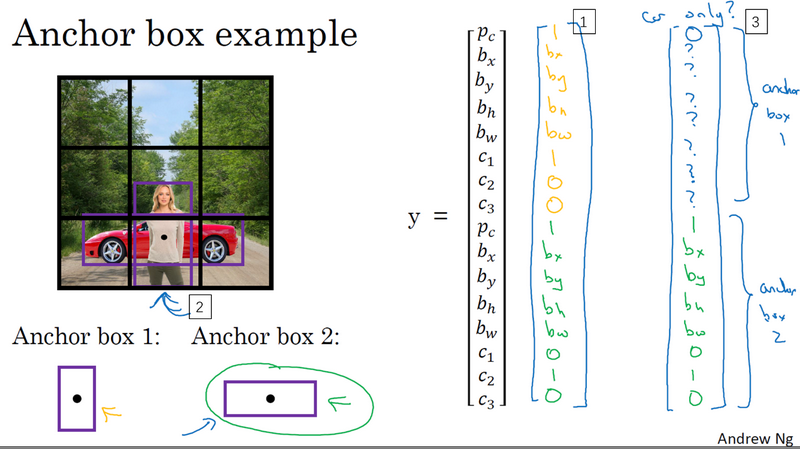
所以我们来看一个具体的例子，对于这个格子（编号2），我们定义一下:
。
所以行人更类似于anchor box 1的形状，所以对于行人来说，我们将她分配到向量的上半部分。是的，这里存在一个对象，即，有一个边界框包住行人，如果行人是类别1，那么 （编号1所示的橙色参数）。车子的形状更像anchor box 2，所以这个向量剩下的部分是 ，然后和车相关的边界框，然后（编号1所示的绿色参数）。所以这就是对应中下格子的标签 ，这个箭头指向的格子（编号2所示）。
现在其中一个格子有车，没有行人，如果它里面只有一辆车，那么假设车子的边界框形状是这样，更像anchor box 2，如果这里只有一辆车，行人走开了，那么anchor box 2分量还是一样的，要记住这是向量对应anchor box 2的分量和anchor box 1对应的向量分量，你要填的就是，里面没有任何对象，所以 ，然后剩下的就是don’t care-s(即？)（编号3所示）。
现在还有一些额外的细节，如果你有两个anchor box，但在同一个格子中有三个对象，这种情况算法处理不好，你希望这种情况不会发生，但如果真的发生了，这个算法并没有很好的处理办法，对于这种情况，我们就引入一些打破僵局的默认手段。还有这种情况，两个对象都分配到一个格子中，而且它们的anchor box形状也一样，这是算法处理不好的另一种情况，你需要引入一些打破僵局的默认手段，专门处理这种情况，希望你的数据集里不会出现这种情况，其实出现的情况不多，所以对性能的影响应该不会很大。
这就是anchor box的概念，我们建立anchor box这个概念，是为了处理两个对象出现在同一个格子的情况，实践中这种情况很少发生，特别是如果你用的是19×19网格而不是3×3的网格，两个对象中点处于361个格子中同一个格子的概率很低，确实会出现，但出现频率不高。也许设立anchor box的好处在于anchor box能让你的学习算法能够更有征对性，特别是如果你的数据集有一些很高很瘦的对象，比如说行人，还有像汽车这样很宽的对象，这样你的算法就能更有针对性的处理，这样有一些输出单元可以针对检测很宽很胖的对象，比如说车子，然后输出一些单元，可以针对检测很高很瘦的对象，比如说行人。
最后，你应该怎么选择anchor box呢？人们一般手工指定anchor box形状，你可以选择5到10个anchor box形状，覆盖到多种不同的形状，可以涵盖你想要检测的对象的各种形状。还有一个更高级的版本，我就简单说一句，你们如果接触过一些机器学习，可能知道后期YOLO论文中有更好的做法，就是所谓的k-平均算法，可以将两类对象形状聚类，如果我们用它来选择一组anchor box，选择最具有代表性的一组anchor box，可以代表你试图检测的十几个对象类别，但这其实是自动选择anchor box的高级方法。如果你就人工选择一些形状，合理的考虑到所有对象的形状，你预计会检测的很高很瘦或者很宽很胖的对象，这应该也不难做。
所以这就是anchor box，在下一个视频中，我们把学到的所有东西一起融入到YOLO算法中。
3.9 YOLO 算法（Putting it together: YOLO algorithm）
你们已经学到对象检测算法的大部分组件了，在这个视频里，我们会把所有组件组装在一起构成YOLO对象检测算法。
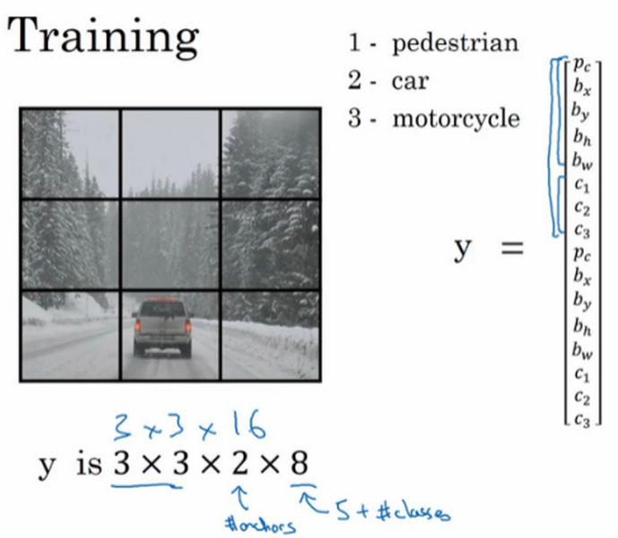
我们先看看如何构造你的训练集，假设你要训练一个算法去检测三种对象，行人、汽车和摩托车，你还需要显式指定完整的背景类别。这里有3个类别标签，如果你要用两个anchor box，那么输出 就是3×3×2×8，其中3×3表示3×3个网格，2是anchor box的数量，8是向量维度，8实际上先是5（）再加上类别的数量（）。你可以将它看成是3×3×2×8，或者3×3×16。要构造训练集，你需要遍历9个格子，然后构成对应的目标向量。
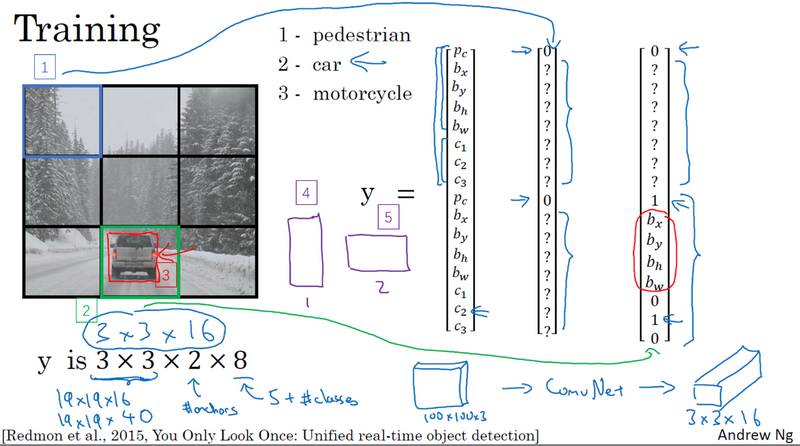
所以先看看第一个格子（编号1），里面没什么有价值的东西，行人、车子和摩托车，三个类别都没有出现在左上格子中，所以对应那个格子目标就是这样的，，第一个anchor box的 是0，因为没什么和第一个anchor box有关的，第二个anchor box的 也是0，剩下这些值是don’t care-s。
现在网格中大多数格子都是空的，但那里的格子（编号2）会有这个目标向量，，所以假设你的训练集中，对于车子有这样一个边界框（编号3），水平方向更长一点。所以如果这是你的anchor box，这是anchor box 1（编号4），这是anchor box 2（编号5），然后红框和anchor box 2的交并比更高，那么车子就和向量的下半部分相关。要注意，这里和anchor box 1有关的 是0，剩下这些分量都是don’t care-s，然后你的第二个 ，然后你要用这些（）来指定红边界框的位置，然后指定它的正确类别是2()，对吧，这是一辆汽车。
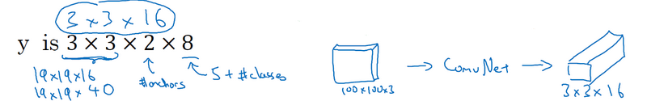
所以你这样遍历9个格子，遍历3×3网格的所有位置，你会得到这样一个向量，得到一个16维向量，所以最终输出尺寸就是3×3×16。和之前一样，简单起见，我在这里用的是3×3网格，实践中用的可能是19×19×16，或者需要用到更多的anchor box，可能是19×19×5×8，即19×19×40，用了5个anchor box。这就是训练集，然后你训练一个卷积网络，输入是图片，可能是100×100×3，然后你的卷积网络最后输出尺寸是，在我们例子中是3×3×16或者3×3×2×8。
接下来我们看看你的算法是怎样做出预测的，输入图像，你的神经网络的输出尺寸是这个3×3×2×8，对于9个格子，每个都有对应的向量。对于左上的格子（编号1），那里没有任何对象，那么我们希望你的神经网络在那里（第一个）输出的是0，这里（第二个）是0，然后我们输出一些值，你的神经网络不能输出问号，不能输出don’t care-s，剩下的我输入一些数字，但这些数字基本上会被忽略，因为神经网络告诉你，那里没有任何东西，所以输出是不是对应一个类别的边界框无关紧要，所以基本上是一组数字，多多少少都是噪音（输出 如编号3所示）。
和这里的边界框不大一样，希望的值，那个左下格子（编号2）的输出（编号4所示），形式是，对于边界框1来说（）是0，然后就是一组数字，就是噪音（anchor box 1对应行人，此格子中无行人，）。希望你的算法能输出一些数字，可以对车子指定一个相当准确的边界框（anchor box 2对应汽车，此格子中有车，），这就是神经网络做出预测的过程。
最后你要运行一下这个非极大值抑制，为了让内容更有趣一些，我们看看一张新的测试图像，这就是运行非极大值抑制的过程。如果你使用两个anchor box，那么对于9个格子中任何一个都会有两个预测的边界框，其中一个的概率很低。但9个格子中，每个都有两个预测的边界框，比如说我们得到的边界框是是这样的，注意有一些边界框可以超出所在格子的高度和宽度（编号1所示）。接下来你抛弃概率很低的预测，去掉这些连神经网络都说，这里很可能什么都没有，所以你需要抛弃这些（编号2所示）。
最后，如果你有三个对象检测类别，你希望检测行人，汽车和摩托车，那么你要做的是，对于每个类别单独运行非极大值抑制，处理预测结果所属类别的边界框，用非极大值抑制来处理行人类别，用非极大值抑制处理车子类别，然后对摩托车类别进行非极大值抑制，运行三次来得到最终的预测结果。所以算法的输出最好能够检测出图像里所有的车子，还有所有的行人（编号3所示）。
这就是YOLO对象检测算法，这实际上是最有效的对象检测算法之一，包含了整个计算机视觉对象检测领域文献中很多最精妙的思路。你可以在本周的编程作业中尝试现实这个算法，所以我希望你喜欢本周的编程练习，这里还有一个可选的视频，你们可以看，也可以不看，总之，我们下周见。
3.10 候选区域（选修）（Region proposals (Optional)）
如果你们阅读一下对象检测的文献，可能会看到一组概念，所谓的候选区域，这在计算机视觉领域是非常有影响力的概念。我把这个视频定为可选视频是因为我用到候选区域这一系列算法的频率没有那么高，但当然了，这些工作是很有影响力的，你们在工作中也可能会碰到，我们来看看。
你们还记得滑动窗法吧，你使用训练过的分类器，在这些窗口中全部运行一遍，然后运行一个检测器，看看里面是否有车辆，行人和摩托车。现在你也可以运行一下卷积算法，这个算法的其中一个缺点是，它在显然没有任何对象的区域浪费时间，对吧。
所以这里这个矩形区域（编号1）基本是空的，显然没有什么需要分类的东西。也许算法会在这个矩形上（编号2）运行，而你知道上面没有什么有趣的东西。
[Girshick R, Donahue J, Darrell T, et al. Rich feature hierarchies for accurate object detection and semantic segmentation[C]//Proceedings of the IEEE conference on computer vision and pattern recognition. 2014: 580-587.]
所以Ross Girshick，Jeff Donahue，Trevor Darrell，Jitendra Malik，在本幻灯片底部引用到的论文中提出一种叫做R-CNN的算法，意思是带区域的卷积网络，或者说带区域的CNN。这个算法尝试选出一些区域，在这些区域上运行卷积网络分类器是有意义的，所以这里不再针对每个滑动窗运行检测算法，而是只选择一些窗口，在少数窗口上运行卷积网络分类器。
选出候选区域的方法是运行图像分割算法，分割的结果是下边的图像，为了找出可能存在对象的区域。比如说，分割算法在这里得到一个色块，所以你可能会选择这样的边界框（编号1），然后在这个色块上运行分类器，就像这个绿色的东西（编号2），在这里找到一个色块，接下来我们还会在那个矩形上（编号2）运行一次分类器，看看有没有东西。在这种情况下，如果在蓝色色块上（编号3）运行分类器，希望你能检测出一个行人，如果你在青色色块(编号4)上运行算法，也许你可以发现一辆车，我也不确定。
所以这个细节就是所谓的分割算法，你先找出可能2000多个色块，然后在这2000个色块上放置边界框，然后在这2000个色块上运行分类器，这样需要处理的位置可能要少的多，可以减少卷积网络分类器运行时间，比在图像所有位置运行一遍分类器要快。特别是这种情况，现在不仅是在方形区域（编号5）中运行卷积网络，我们还会在高高瘦瘦（编号6）的区域运行，尝试检测出行人，然后我们在很宽很胖的区域（编号7）运行，尝试检测出车辆，同时在各种尺度运行分类器。
这就是R-CNN或者区域CNN的特色概念，现在看来R-CNN算法还是很慢的。所以有一系列的研究工作去改进这个算法，所以基本的R-CNN算法是使用某种算法求出候选区域，然后对每个候选区域运行一下分类器，每个区域会输出一个标签，有没有车子？有没有行人？有没有摩托车？并输出一个边界框，这样你就能在确实存在对象的区域得到一个精确的边界框。
澄清一下，R-CNN算法不会直接信任输入的边界框，它也会输出一个边界框，，和，这样得到的边界框比较精确，比单纯使用图像分割算法给出的色块边界要好，所以它可以得到相当精确的边界框。
现在R-CNN算法的一个缺点是太慢了，所以这些年来有一些对R-CNN算法的改进工作，Ross Girshik提出了快速的R-CNN算法，它基本上是R-CNN算法，不过用卷积实现了滑动窗法。最初的算法是逐一对区域分类的，所以快速R-CNN用的是滑动窗法的一个卷积实现，这和你在本周第四个视频（3.4 卷积的滑动窗口实现）中看到的大致相似，这显著提升了R-CNN的速度。
事实证明，Fast R-CNN算法的其中一个问题是得到候选区域的聚类步骤仍然非常缓慢，所以另一个研究组，任少卿（Shaoqing Ren）、何凯明（Kaiming He）、Ross Girshick和孙剑（Jiangxi Sun）提出了更快的R-CNN算法（Faster R-CNN），使用的是卷积神经网络，而不是更传统的分割算法来获得候选区域色块，结果比Fast R-CNN算法快得多。不过我认为大多数更快R-CNN的算法实现还是比YOLO算法慢很多。
候选区域的概念在计算机视觉领域的影响力相当大，所以我希望你们能了解一下这些算法，因为你可以看到还有人在用这些概念。对我个人来说，这是我的个人看法而不是整个计算机视觉研究界的看法，我觉得候选区域是一个有趣的想法，但这个方法需要两步，首先得到候选区域，然后再分类，相比之下，能够一步做完，类似于YOLO或者你只看一次（You only look once）这个算法，在我看来，是长远而言更有希望的方向。但这是我的个人看法，而不是整个计算机视觉研究界的看法，所以你们最好批判接受。但我想这个R-CNN概念，你可能会想到，或者碰到其他人在用，所以这也是值得了解的，这样你可以更好地理解别人的算法。
现在我们就讲完这周对象检测的材料了，我希望你们喜欢本周的编程练习，我们下周见。
参考文献：
- Joseph Redmon, Santosh Divvala, Ross Girshick, Ali Farhadi - You Only Look Once: Unified, Real-Time Object Detection (2015)
- Joseph Redmon, Ali Farhadi - YOLO9000: Better, Faster, Stronger (2016)
- Allan Zelener - YAD2K: Yet Another Darknet 2 Keras
- The official YOLO website (https://pjreddie.com/darknet/yolo/)